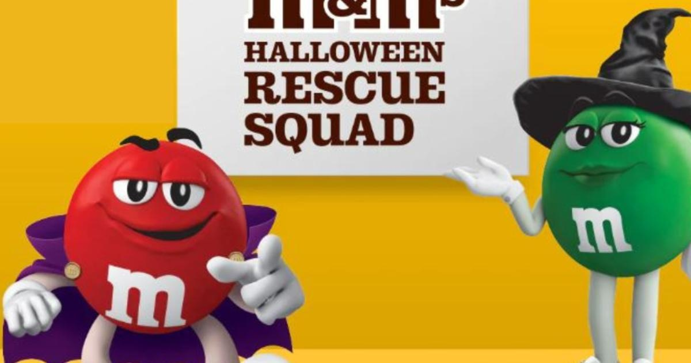

M&M's promises to refill your candy supply if you run out on HalloweenMIAMI - Halloween can be scary fun for all kinds of reasons. Child-sizes ghosts and ghouls roaming the streets, homes decorated with monsters and graveyards, and, of course, free candy. Lots and lots of free candy is handed out to trick-or-treaters every year. While some folks know exactly what to expect, others can never quite figure out just how much candy they'll need for the spookiest night of the year. For those who underestimate the number of visitors in their neighborhood, Mars - the maker of M&M's - has got their back. If their candy bowl is in desperate need of a refill, M&M's Halloween Rescue Squad will deliver free M&M's straight to their door in under an hour. Just log onto the website after 3 p.m. on Halloween and request a delivery. This is available while supplies last. This service is available wherever Gopuff delivers. Here in South Florida, they cover a number of cities including Bal Harbour, Coconut Creek, Cooper City, Dania Beach, Davie, Deerfield Beach, Doral, Fort Lauderdale, Hallandale Beach, Hialeah, Hollywood, Kendall, Lauderdale Lakes, Lauderhill, Miami, Miami Beach, and Miramar. This year Mars said they want to help you to "Halloween it like you mean it." According to RealSimple.com, M&M's are one of the top five Halloween candies in America. The other four are Reese's Peanut Butter Cups, Kit Kat, Skittles, and Snickers. However, M&M's was not one of the top three choices in Florida last year. According to CandyStore.com, Reese's Cups were number one, followed by Skittles and Hot Tamales. Another fun fact from the CandyStore website, among those who celebrate Halloween, 96% will purchase candy and spend, on average, $31.93. According to the National Retail Federation, Halloween candy spending should hit a whopping $3.6 Billion this year. That's a 16% jump that blows away previous highs. for more features. |
 |